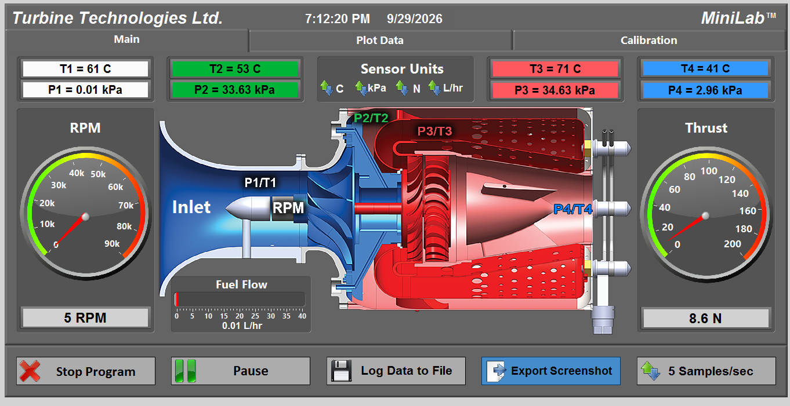
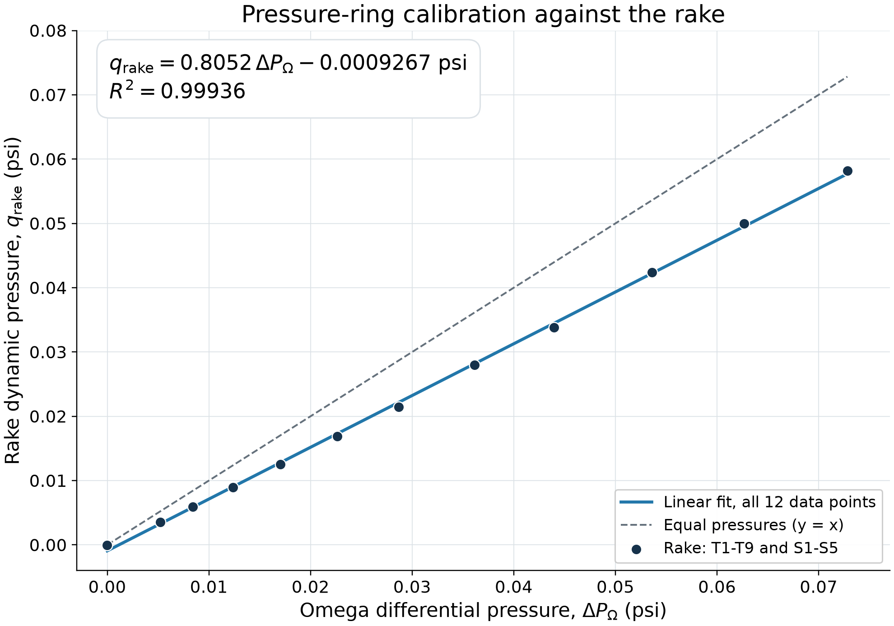
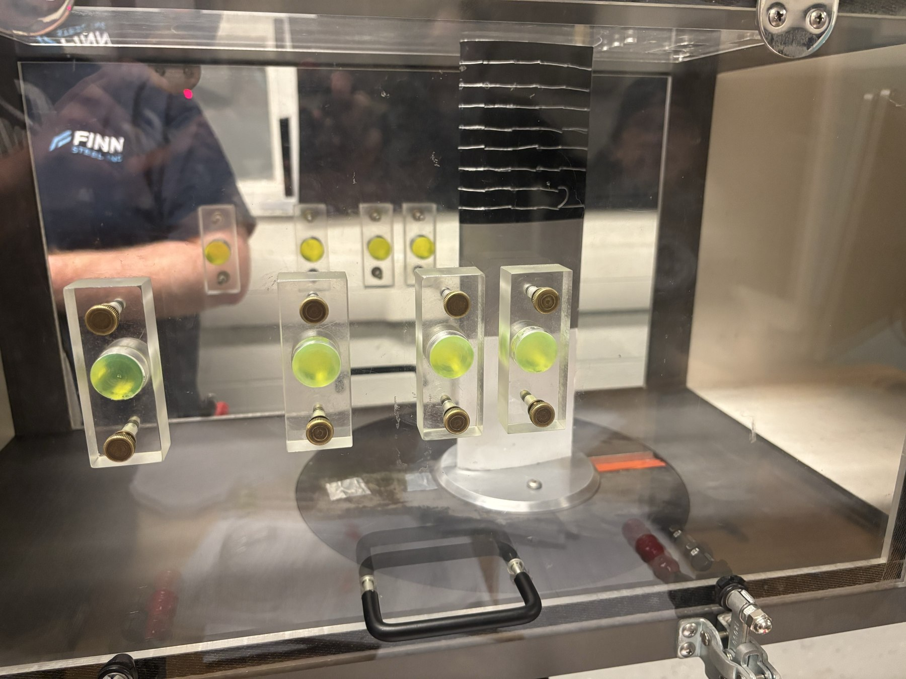
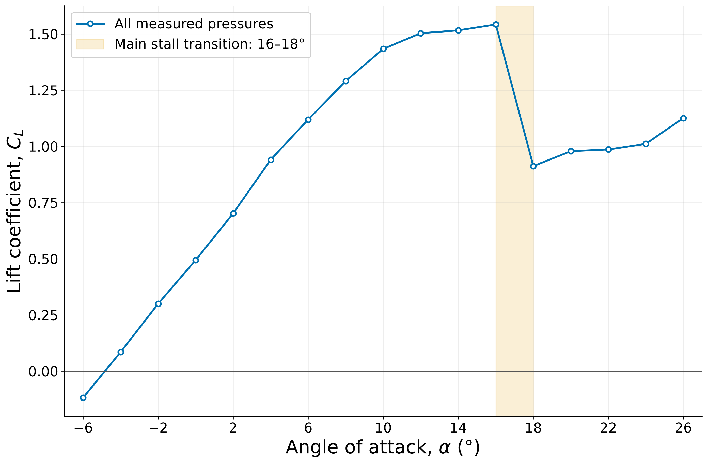
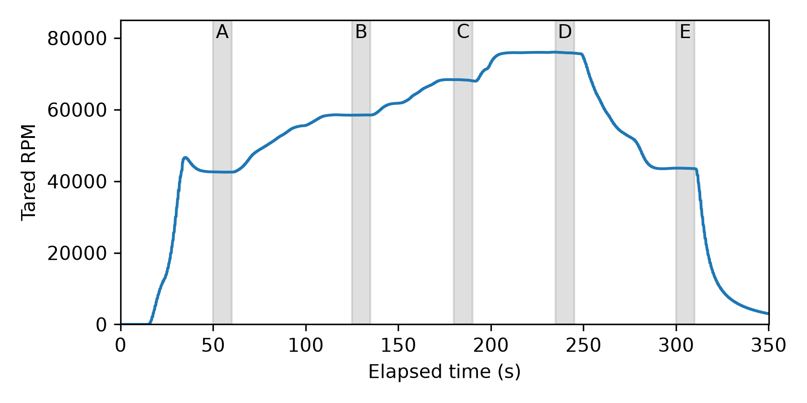

In progress / AE460 / Experimental methods / Labs completed; course in progress
University of Illinois Urbana-Champaign · AE460 · Fall 2026
Aerodynamics and propulsion laboratory
AE460 combines instrumented experiments with data reduction and checks on the underlying assumptions. The work completed so far covers wind-tunnel calibration, airfoil pressure and stall, and a turbojet operating sequence.
- My contribution
- Laboratory measurements and analysis of pressure, aerodynamic-force, and turbojet time-history data. Reports, notebooks, and Python processing connect the recorded channels to the physical models.
- Tools
- LabVIEW data acquisition · Pressure instrumentation · Wind-tunnel testing · Python analysis
- Current status
- Three laboratory studies documented. The course is ongoing, and some interpretations remain conditional on calibration and experimental assumptions.

Calibrate the wind tunnel before interpreting airfoil data
The first lab compares a pressure rake, an Omega differential-pressure transducer, and a Dwyer manometer over twelve motor-speed settings. I reduced the total- and static-pressure channels to dynamic pressure and examined the calibration and instrument differences.
A provisional linear fit has R² ≈ 0.9994, but one static probe shows a persistent anomaly and the manometer has a possible zero offset. The analysis retains all recorded points and separates diagnostic sensitivity checks from the primary fit. A strong fitted trend does not by itself establish instrument accuracy.


Connect airfoil pressures with stall observations
The second lab uses pressure taps across 17 angles of attack and tuft photographs to examine lift, pressure drag, and flow separation. The analysis converts each run to pressure coefficients and integrates a closed, piecewise-linear airfoil contour.
The report draft places the main stall transition between 16° and 18°, with maximum sampled lift coefficient about 1.54 at 16°. Photograph-angle assignments remain provisional, and pressure integration does not include skin-friction drag. Those qualifications keep the plots and observed tufts from being interpreted as a fully validated total-drag measurement.




Read the turbojet through its acquisition channels
The turbojet lab uses the supplied LabVIEW interface to record station temperatures and pressures, RPM, fuel flow, and thrust. The retained run captures air start, light-off, acceleration, several throttle dwells, return to idle, and shutdown at approximately five samples per second.
The analysis selects operating windows and compares compressor and air-standard cycle efficiencies. Nearly constant RPM does not imply thermal equilibrium: temperatures continue to drift during some windows. An initial compressor-efficiency estimate above 100% is retained as a model / measurement discrepancy rather than treated as valid performance. Ambient pressure is estimated and room temperature assumed because the barometer readings were unavailable.

